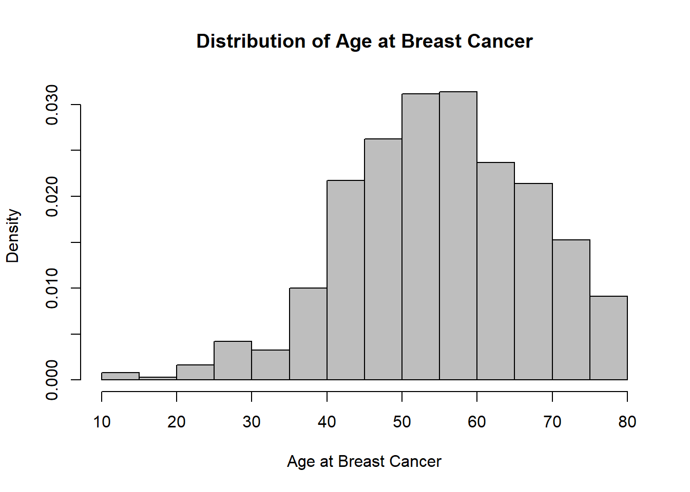
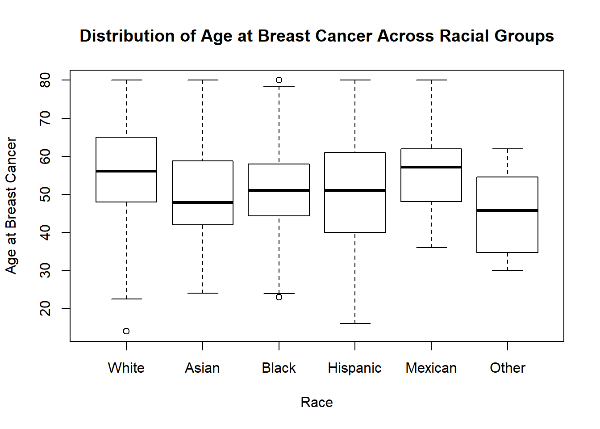
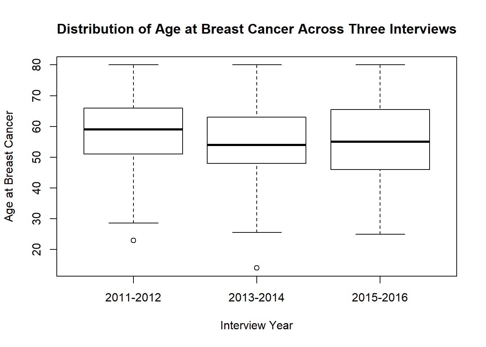

Breast cancer is the most commonly diagnosed cancer among American women. It is estimated that about 1 in 8 U.S women will develop invasive breast cancer over the course of lifetime. An inverse association between smoking and breast cancer survival rate has been reported by many studies. A history of cigarette smoking can significantly increase the risk of breast cancer. However, there is a limited number of prior literatures investigate the association of smoking and breast cancer at a population level using national survey data. To address this knowledge gap, we conduct this secondary data analysis study on the National Health and Nutrition Examination Survey (NHANES) from year 2011 to 2016 to see if there is a trend of smoking and breast cancer risk across years in the United States.
Does racial/ethnic disparity present in the association of obesity and risk of breast cancer in the United States, when we controlling for age?
The key predictor of interest was established using the question on “have you smoked at least 100 cigarettes in your entire life”. The outcome of this study used the question “what kind of cancer was it”. Other covariates such as race, age, alcohol, overweight, income, and age at the first birth were identified based on literature review from Pubmed.
Does the risk of breast cancer increases with heavy smoking in the United States, when we controlling for other covariates?
Source We used the Demographics and Questionnaire data files from the NHANES 2011-2016 datasets (https://wwwn.cdc.gov/nchs/nhanes/Default.aspx). NHANES is a nationally representative, multi-stage complex survey designed to assess the health and nutritional status of the non-institutionalized, civilian US population.
# readin csv file with url
files = read_csv("./data/file_link.csv")
# demographics
demo =
files %>%
filter(str_detect(file_name, "DEMO")) %>%
mutate(map(.x = file_link, ~read_xpt(.x))) %>%
unnest %>%
select(file_name, id = SEQN, gender = RIAGENDR, age = RIDAGEYR, race = RIDRETH3, edu = DMDEDUC3,
six_month = RIDEXMON, birth_country = DMDBORN4, marital_status = DMDMARTL,
pregancy_at_exam = RIDEXPRG, strata = SDMVSTRA, psu = SDMVPSU, weight = WTINT2YR) %>%
mutate(year = as.factor(ifelse(str_detect(file_name, "_G") == TRUE, "2011-2012",
ifelse(str_detect(file_name, "_H") == TRUE, "2013-2014", "2015-2016"))),
weight = 1/3 * weight) %>%
select(id, year, gender:weight)
# cancer history
mcq =
files %>%
filter(str_detect(file_name, "MCQ")) %>%
mutate(map(.x = file_link, ~read_xpt(.x))) %>%
unnest %>%
select(file_name, id = SEQN, overweight = MCQ080, cancer_malignancy = MCQ220, cancer_code1 = MCQ230A,
cancer_code2 = MCQ230B, age_breast_cancer = MCQ240E, told_lose_weight = MCQ365A,
told_exercise = MCQ365B, told_reduce_fat = MCQ365D) %>%
mutate(year = as.factor(ifelse(str_detect(file_name, "_G") == TRUE, "2011-2012",
ifelse(str_detect(file_name, "_H") == TRUE, "2013-2014", "2015-2016")))) %>%
select(id, year, overweight:told_reduce_fat)
# smoking history
smq =
files %>%
filter(str_detect(file_name, "SMQ")) %>%
mutate(map(.x = file_link, ~read_xpt(.x))) %>%
unnest %>%
select(file_name, id = SEQN, smoke_100 = SMQ020) %>%
mutate(year = as.factor(ifelse(str_detect(file_name, "_G") == TRUE, "2011-2012",
ifelse(str_detect(file_name, "_H") == TRUE, "2013-2014", "2015-2016")))) %>%
select(id, year, smoke_100)
# hight / weight report
whq =
files %>%
filter(str_detect(file_name, "WHQ")) %>%
mutate(map(.x = file_link, ~read_xpt(.x))) %>%
unnest %>%
select(file_name, id = SEQN, self_height = WHD010, self_weight = WHD020, times_lost_ten_lb = WHQ225,
self_greaest_weight = WHD140, age_heaviest = WHQ150) %>%
mutate(year = as.factor(ifelse(str_detect(file_name, "_G") == TRUE, "2011-2012",
ifelse(str_detect(file_name, "_H") == TRUE, "2013-2014", "2015-2016")))) %>%
select(id, year, self_height:age_heaviest)
# alcohol history
alq =
files %>%
filter(str_detect(file_name, "ALQ")) %>%
mutate(map(.x = file_link, ~read_xpt(.x))) %>%
unnest %>%
select(file_name, id = SEQN, alcohol = ALQ130) %>%
mutate(year = as.factor(ifelse(str_detect(file_name, "_G") == TRUE, "2011-2012",
ifelse(str_detect(file_name, "_H") == TRUE, "2013-2014", "2015-2016")))) %>%
select(id, year, alcohol)
# reproduction
rhq =
files %>%
filter(str_detect(file_name, "RHQ")) %>%
mutate(map(.x = file_link, ~read_xpt(.x))) %>%
unnest %>%
select(file_name, id = SEQN, age_first_birth = RHD180) %>%
mutate(year = as.factor(ifelse(str_detect(file_name, "_G") == TRUE, "2011-2012",
ifelse(str_detect(file_name, "_H") == TRUE, "2013-2014", "2015-2016")))) %>%
select(id, year, age_first_birth)
# incomce information
inq =
files %>%
filter(str_detect(file_name, "INQ")) %>%
mutate(map(.x = file_link, ~read_xpt(.x))) %>%
unnest %>%
select(file_name, id = SEQN, income = INDFMMPC) %>%
mutate(year = as.factor(ifelse(str_detect(file_name, "_G") == TRUE, "2011-2012",
ifelse(str_detect(file_name, "_H") == TRUE, "2013-2014", "2015-2016")))) %>%
select(id, year, income)Scraping Method and Cleaning
# replace "refused"" and "don't know" data as missing
nhanes = merge(demo, merge(alq, merge(inq, merge(mcq, merge(rhq, merge(smq, whq)))))) %>%
replace_with_na(replace = list(birth_country = c(77, 99), marital_status = c(77, 99), overweight = c(7, 9),
cancer_malignancy = c(7, 9), cancer_code1 = 99, age_breast_cancer = 99999,
told_lose_weight = c(7, 9), told_exercise = c(7, 9), told_reduce_fat = c(7, 9),
self_height = c(7777, 9999), self_weight = c(7777, 9999),
times_lost_ten_lb = c(7, 9), self_greaest_weight = c(7777, 9999),
age_heaviest = c(77777, 99999), smoke_100 = c(7, 9), alcohol = c(777, 999),
income = c(7, 9), age_first_birth = c(777, 999)))
# tried replace_with_na_all() function but failed
# clean and choose the predictors and exposures
nhanes_model =
nhanes %>%
mutate(breast_cancer = ifelse(cancer_code1 == 14 | cancer_code2 == 14, 1, 0),
breast_cancer = as.factor(ifelse(is.na(breast_cancer), 0, breast_cancer)),
race = ifelse(race == 1, "Mexican",
ifelse(race == 2, "Hispanic",
ifelse(race == 3, "White",
ifelse(race == 4, "Black",
ifelse(race == 6, "Asian", "Other"))))),
race = fct_relevel(as.factor(race), "White"),
overweight = fct_relevel(as.factor(overweight), '2'),
smoke_100 = fct_relevel(as.factor(smoke_100), '2'),
income = fct_relevel(as.factor(income), '2')) %>%
filter(gender == 2) %>%
select(id, year, age, race, breast_cancer, overweight, smoke_100, age_breast_cancer, alcohol, age_first_birth,
income, strata, psu, weight)skimr::skim(nhanes_model)## Skim summary statistics
## n obs: 8920
## n variables: 14
##
## -- Variable type:factor -----------------------------------------------------------------------------------------------------------------
## variable missing complete n n_unique
## breast_cancer 0 8920 8920 2
## income 565 8355 8920 3
## overweight 4 8916 8920 2
## race 0 8920 8920 6
## smoke_100 152 8768 8920 2
## year 0 8920 8920 3
## top_counts ordered
## 0: 8674, 1: 246, NA: 0 FALSE
## 3: 3890, 1: 3306, 2: 1159, NA: 565 FALSE
## 2: 5445, 1: 3471, NA: 4 FALSE
## Whi: 3205, Bla: 2068, Mex: 1247, Asi: 1093 FALSE
## 2: 5919, 1: 2849, NA: 152 FALSE
## 201: 3101, 201: 2976, 201: 2843, NA: 0 FALSE
##
## -- Variable type:numeric ----------------------------------------------------------------------------------------------------------------
## variable missing complete n mean sd p0
## age 0 8920 8920 47.56 18.38 18
## age_breast_cancer 8676 244 8920 55.86 12.97 14
## age_first_birth 3885 5035 8920 22.2 4.93 14
## alcohol 4118 4802 8920 2.14 1.79 1
## id 0 8920 8920 78315.31 9172.62 62164
## psu 0 8920 8920 1.53 0.55 1
## strata 0 8920 8920 111.26 12.94 90
## weight 0 8920 8920 13269.13 11657.91 1776.99
## p25 p50 p75 p100 hist
## 32 47 62 80 <U+2587><U+2587><U+2587><U+2587><U+2586><U+2587><U+2586><U+2586>
## 47.75 56 65 80 <U+2581><U+2581><U+2582><U+2586><U+2587><U+2587><U+2586><U+2583>
## 19 21 25 43 <U+2583><U+2587><U+2583><U+2583><U+2582><U+2581><U+2581><U+2581>
## 1 2 3 30 <U+2587><U+2581><U+2581><U+2581><U+2581><U+2581><U+2581><U+2581>
## 69930.75 78955.5 86133 93702 <U+2587><U+2587><U+2585><U+2587><U+2587><U+2587><U+2587><U+2587>
## 1 2 2 3 <U+2587><U+2581><U+2581><U+2587><U+2581><U+2581><U+2581><U+2581>
## 100 111 123 133 <U+2587><U+2586><U+2586><U+2586><U+2586><U+2586><U+2586><U+2587>
## 5913.93 8639.98 15472.36 77918.61 <U+2587><U+2582><U+2581><U+2581><U+2581><U+2581><U+2581><U+2581>Weights variables were created in NHANES dataset to analyze NHANES dataset to account for the multistage complex survey design. NHANES survey consists initial in-home interview, Mobile Examination Centers (MEC) examinations and follow-up questionnaires. The base weights were adjusted for nonresponse to the in-home interview when creating interview weights, and further adjusted for non-response to the MEC exam when creating exam weights. Therefore, to correctly analyze NHANES dataset, we need to consider the effects of weighting on our sample to make a better estimate for the population before we start our analysis.
To investigate the association between smoking and risk of breast cancer across racial/ethnic groups from 2011 to 2016, we pooled the Demographics (demo), Weight History (whq), Medical Conditions (mcq), Smoking History (smq), Alcohol (alq), and Income (inq) data files for each survey cycle using the urls. Then, we merged and tidied our data. We recoded “refused” (7 or 77 or 777) “don’t know” (9, 99, 999, 9999) responses as missing value.
Weights variables were created in NHANES dataset to analyze NHANES dataset to account for the complex survey design. NHANES survey consists initial in-home interview, Mobile Examination Centers (MEC) examinations and follow-up questionnaires. The base weights were adjusted for nonresponse to the in-home interview when creating interview weights, and further adjusted for non-response to the MEC exam when creating exam weights. Therefore, to correctly analyze NHANES dataset, we need to consider the effects of weighting on our sample to make a better estimate for the population before we start our analysis.
Based on the tutorial for National Health and Nutrition Examination Survey, we should select the weight of the smallest analysis subpopulation to produce estimates appropriately adjusted for survey non-response. Each NHANES survey cycle is divided into five sections labeled by collection method: Demographics, Dietary, Examination, Laboratory, and Questionnaire. This study only used variables from Demographics and Questionnaire (Weight History, Medical Conditions data files).
# Make Survey Design
design = svydesign(id = ~psu, strata = ~strata, data = nhanes_model, weights = ~weight, nest = TRUE)Since the Demographics and Questionnaire data were both collected as part of the household interview, the sample weight used for this study should be WTINT2YR, which is the full sample 2-year interview weight. The next step is to construct weights for combined NHANES survey cycles. For a 6-year data from 2011 to 2016, a weight should be constructed as ⅓ *WTINT2YR. We renamed variable WTINT2YR as ‘weight’ and divided ‘weight’ by 3 to represent the weight from 2011-2016 only using the household interview data.
Visualizations, summaries, and exploratory statistical analyses. Justify the steps you took, and show any major changes to your ideas.
# proposed model 1, smoking as main effectr
model1 = svyglm(breast_cancer ~ age + race + smoke_100, family = "binomial", design = design)
# null model 2, include only age and race
model2 = svyglm(breast_cancer ~ age + race, family = "binomial", design = design)
# full model 3, include all the variables mentioned in the reference
model3 = svyglm(breast_cancer ~ age + race + smoke_100 + overweight + alcohol + age_first_birth + income, family = "binomial", design = design)
# comparison of AIC between 3 models
tibble(
model = c("model1", "model2", "model3"),
AIC = c(summary(model1)$aic, summary(model2)$aic, summary(model3)$aic)) %>%
knitr::kable(digit = 3)| model | AIC |
|---|---|
| model1 | 1850.594 |
| model2 | 1853.784 |
| model3 | 833.398 |
# comparison between proposed model (model 1) and null model (model 2)
anova(model1, model2, method = "Wald")## Wald test for smoke_100
## in svyglm(formula = breast_cancer ~ age + race + smoke_100, family = "binomial",
## design = design)
## F = 3.201956 on 1 and 40 df: p= 0.081124# p-value < 0.1, we can conclude that proposed mode is significantly better than null model
# comparison between proposed model (model 1) and null model (model 3)
anova(model1, model3, method = "Wald")## Wald test for overweight alcohol age_first_birth income
## in svyglm(formula = breast_cancer ~ age + race + smoke_100 + overweight +
## alcohol + age_first_birth + income, family = "binomial",
## design = design)
## F = 1.073669 on 5 and 35 df: p= 0.39167# p-value > 0.1, we can conclude that proposed mode is similar to the full modelThe proposed model (model 1) with smoking as the main effect is significantly better than the null model at alpha = 0.1 level, while the proposed model is similar to the full model. Thus, it is reasonable to use the proposed model.
broom::tidy(model1) %>%
mutate(OR = exp(estimate),
conf.low = exp(estimate - 1.645 * std.error),
conf.high = exp(estimate + 1.645 * std.error)) %>%
select(term, beta = estimate, p.value, OR, conf.low, conf.high) %>%
knitr::kable(digit = 3)| term | beta | p.value | OR | conf.low | conf.high |
|---|---|---|---|---|---|
| (Intercept) | -7.696 | 0.000 | 0.000 | 0.000 | 0.001 |
| age | 0.071 | 0.000 | 1.073 | 1.065 | 1.082 |
| raceAsian | -0.125 | 0.681 | 0.883 | 0.538 | 1.448 |
| raceBlack | -0.334 | 0.088 | 0.716 | 0.523 | 0.980 |
| raceHispanic | 0.092 | 0.684 | 1.096 | 0.759 | 1.584 |
| raceMexican | -0.473 | 0.059 | 0.623 | 0.418 | 0.929 |
| raceOther | -0.332 | 0.605 | 0.718 | 0.252 | 2.045 |
| smoke_1001 | 0.358 | 0.081 | 1.431 | 1.029 | 1.988 |
The odds of getting breast cancer among women who had smoked is 1.431 times the odds comparing to the ones who had not smoked controlling for age and race. The true odds ratio lies between 1.029 and 1.988.
Since we are using weight, strata and cluster data, which is not the same as the original data, we have to use the ‘svyplot’ to do the visualization
# Distribution of Age at Breast Cancer
svyhist(~nhanes_model$age_breast_cancer, breaks = c(10, 15, 20, 25, 30, 35, 40, 45, 50, 55, 60, 65, 70, 75, 80), col = "grey", design, main = "Distribution of Age at Breast Cancer", xlab = "Age at Breast Cancer")
# Distribution of Age at Breast Cancer Across Racial Groups
svyboxplot(age_breast_cancer ~ race, design, xlab = "Race", ylab = "Age at Breast Cancer",
main = "Distribution of Age at Breast Cancer Across Racial Groups")
# Distribution of Age at Breast Cancer Across Three Interviews
svyboxplot(age_breast_cancer ~ year, design, xlab = "Interview Year", ylab = "Age at Breast Cancer",
main = "Distribution of Age at Breast Cancer Across Three Interviews")